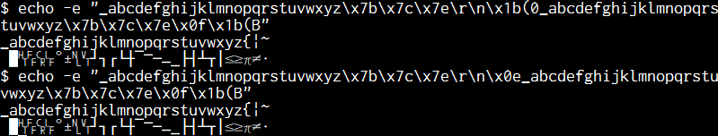

Linux TUI (Text User Interface) transmits the line drawing characters as DEC Special Graphics in some case.
DEC Special Graphics is defined as the <ESC>(0 escape
sequence, and assigned to the line drawing character from 0137(0x5f,'_') to 0176(0x7e).
When receive code is not Japanese, such as ISO8859-1, DEC Special Graphics is designated to G1, so
SO(0x0e) can be used to display DEC Special Graphics.
Tera Term can display DEC Special Graphics using its Special font(font file is "TSPECIAL1.TTF", font name is "Tera Special").
All Tera Special character widths are 1cell.
Example of DEC Special Graphics:
echo -e "_abcdefghijklmnopqrstuvwxyz\x7b\x7c\x7e\r\n\x1b(0_abcdefghijklmnopqrstuvwxyz\x7b\x7c\x7e\x0f\x1b(B" echo -e "_abcdefghijklmnopqrstuvwxyz\x7b\x7c\x7e\r\n\x0e_abcdefghijklmnopqrstuvwxyz\x7b\x7c\x7e\x0f\x1b(B"

font: Tera Special, Myrica
If you do not want to display DEC Special Graphics using SO(0x0e,LS1(Locking Shift 1)), Change ISO2022ShiftFunction setting.
See also information on web.
In CJK environment, Tera Term displays Box-drawing character and some symbols with 2 column widths. (Character width can be changed in the settings. Refer to Additional settings / "Encoding" tab, Ambiguous Characters width)
However, some host applications may assume these characters will be displayed as 1-column wide character which results in incorrect display image.
In addition, a ruler may be displayed by using +-| and some unsupported characters may be displayed as ?? in English mode.
Tera Term can be configured to display these characters by similar code of DEC Special Graphics (if any exists) to minimize the incorrect display image.
Setting can be changed on Additional settings / "Encoding" tab, DEC Special Graphics
However this feature causes a side effect that characters selected by mouse will be copied as different characters in a clipboard.
DEC Special Graphics can also be converted to Unicode and display with VT Window font.
By selecting a font, user can display any preferred design font.
However, glyphs are not in font (SCAN LINE(0x6f...0x73) etc),
font design is wrong, or character width do not match.
DEC Special Graphic - Unicode convert table code Unicode -----+---------------------------------------------- 0x5f U+00A0 NO-BREAK SPACE 0x60 U+25C6 BLACK DIAMOND 0x61 U+2592 MEDIUM SHADE 0x62 U+2409 SYMBOL FOR HORIZONTAL TABULATION 0x63 U+240C SYMBOL FOR FORM FEED 0x64 U+240D SYMBOL FOR CARRIAGE RETURN 0x65 U+240A SYMBOL FOR LINE FEED 0x66 U+00B0 DEGREE SIGN 0x67 U+00B1 PLUS-MINUS SIGN 0x68 U+2424 SYMBOL FOR NEWLINE 0x69 U+240B SYMBOL FOR VERTICAL TABULATION 0x6a U+2518 BOX DRAWINGS LIGHT UP AND LEFT 0x6b U+2510 BOX DRAWINGS LIGHT DOWN AND LEFT 0x6c U+250C BOX DRAWINGS LIGHT DOWN AND RIGHT 0x6d U+2514 BOX DRAWINGS LIGHT UP AND RIGHT 0x6e U+253C BOX DRAWINGS LIGHT VERTICAL AND HORIZONTAL 0x6f U+23BA HORIZONTAL SCAN LINE-1 0x70 U+23BB HORIZONTAL SCAN LINE-3 0x71 U+2500 BOX DRAWINGS LIGHT HORIZONTAL 0x72 U+23BC HORIZONTAL SCAN LINE-7 0x73 U+23BD HORIZONTAL SCAN LINE-9 0x74 U+251C BOX DRAWINGS LIGHT VERTICAL AND RIGHT 0x75 U+2524 BOX DRAWINGS LIGHT VERTICAL AND LEFT 0x76 U+2534 BOX DRAWINGS LIGHT UP AND HORIZONTAL 0x77 U+252C BOX DRAWINGS LIGHT DOWN AND HORIZONTAL 0x78 U+2502 BOX DRAWINGS LIGHT VERTICAL 0x79 U+2264 LESS-THAN OR EQUAL TO 0x7a U+2265 GREATER-THAN OR EQUAL TO 0x7b U+03C0 GREEK SMALL LETTER PI 0x7c U+2260 NOT EQUAL TO 0x7d U+00A3 POUND SIGN 0x7e U+00B7 MIDDLE DOT
See next pages.